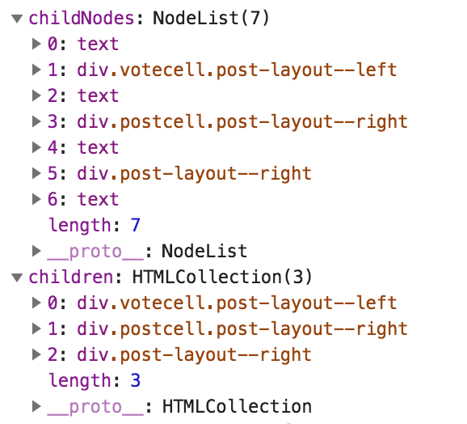

前端基础拾遗之HTML篇
DOCTYPE 作用
DTD（文档类型定义）是一组机器可读的规则，他定义 XML 或 HTML 的特定版本中允许有什么，不允许有什么。而 DOCTYPE 是用来描述使用哪个 DTD，保证网页以标准模式渲染，一个不含任何 DOCTYPE 的网页将会以 怪异(quirks) 模式渲染。HTML5 之前的 HTML 基于 SGML(Standard Generalized Markup Language, 标准通用标记语言)标准，需要 DTD 来保证在标准模式下渲染。HTML5 只需要 DOCTYPE 就可以保证在标准模式下渲染。浏览器解析 HTML 方式
标准模式、怪异模式和部分怪异（近乎标准）模式。在标准模式中，浏览器根据规范显示页面；在混杂模式中，页面以一种比较宽松的向后兼容的方式显示。那些基于 Mozilla 的 Gecko 渲染引擎的，或者 Internet Explorer 8 在 strict mode 下，除了在处理表格的方式上有细微差异外，与标准模式相同。行内元素与块级元素对比
内容上，
一般情况下，行内元素只能包含数据和其他行内元素。而块级元素可以包含行内元素和其他块级元素。这种结构上的包含继承区别可以使块级元素创建比行内元素更”大型“的结构。
格式上，
默认情况下，行内元素不会以新行开始，而块级元素会新起一行。行内元素列表
一个行内元素只占据它对应标签的边框所包含的空间。
b, big, i, small, tt
abbr, acronym, cite, code, dfn, em, kbd, strong, samp, var
a, bdo, br, img, map, object, q, script, span, sub, sup
button, input, label, select, textarea块级元素列表
块级元素占据其父元素（容器）的整个空间，因此创建了一个“块”。1
2
3
4
5
6
7
8
9
10
11
12
13
14
15
16
17
18
19
20
21
22
23
24
25
26
27
28<address> 联系方式信息
<article> HTML5 文章内容
<aside> HTML5 伴随内容
<audio> HTML5 音频播放
<blockquote> 块引用
<canvas> HTML5 绘制图形
<dd> 定义列表中定义条目描述
<div> 文档分区
<dl> 定义列表
<fieldset> 表单元素分组
<figcaption> HTML5 图文信息组标题
<figure> HTML5 图文信息组
<footer> HTML5 区段尾或页尾
<form> 表单
<h1> , <h2> , <h3> , <h4> , <h5> , <h6> 标题级别 1-6.
<header> HTML5 区段头或页头
<hgroup> HTML5 标题组
<hr> 水平分割线
<noscript> 不支持脚本或禁用脚本时显示的内容
<ol> 有序列表
<output> HTML5 表单输出
<p> 行
<pre> 预格式化文本
<section> HTML5 一个页面区段
<table> 表格
<tfoot> 表脚注
<ul> 无序列表
<video> HTML5 视频常见的浏览器内核有哪些？
Trident：主要有 IE 浏览器以及多核浏览器
Gecko：主要有 Firefox 以及 Firefox 的衍生浏览器
WebKit：主要有 Chrome 与 Chrome 的衍生浏览器、Safari 以及多核浏览器
Presto：之前主要应用于 Opera，不过现在的 Opera 使用 WebKit 内核
EdgeHTML：Microsoft Edge，Trident 的一个分支，移除所有旧版 Internet Explorer 遗留下来的代码，并重写主要的代码以和其他现代浏览器的设计精神互通有无HTML 语义化
在程序中, 语义指的是一段代码的含义 — 例如 “这个 HTML 的元素有什么作用，扮演了什么样的角色”。
对开发人员及团队，有利于增加代码可读性，减少差异化；
对搜索引擎，有助于爬虫抓取更多的有效信息，有利于确定上下文和各个关键字的权重，利于 SEO；
对浏览器，即使在 CSS 加载异常的情况下，也能提供一个基础的默认文档样式，方便屏幕阅读器以更有意义的方式渲染。渲染原理

- 浏览器会将 HTML 解析成一个
DOM Tree，DOM Tree的构建过程是一个深度遍历过程：当前节点的所有子节点都构建好后才会去构建当前节点的下一个兄弟节点。 - 将 CSS 解析成
CSS Rule Tree。 - 根据
DOM Tree和CSS Rule Tree来构造 Rendering Tree。注意：Rendering Tree 渲染树并不等同于 DOM 树，因为一些像 Header 或 display:none 的东西就没必要放在渲染树中了。 - 有了 Render Tree，浏览器已经能知道网页中有哪些节点、各个节点的 CSS 定义以及他们的从属关系。下一步操作称之为 layout，顾名思义就是计算出每个节点在屏幕中的位置。
- 再下一步就是绘制，即遍历 render 树，并使用 UI 后端层绘制每个节点。
reflow（回流）：读取或设置位置、尺寸、计算样式等等，都有可能触发 reflow。
repaint（重绘）：改变某个元素的背景色、文字颜色、边框颜色等等不影响它周围或内部布局的属性时，屏幕的一部分要重画， 但是元素的几何尺寸没有变。
https://gist.github.com/paulirish/5d52fb081b3570c81e3a
http://www.cnblogs.com/slly/p/6640761.html- 浏览器会将 HTML 解析成一个
HTTP 超文本传输协议（HyperText Transfer Protocol）
HTTP2
多路复用、二进制分帧、头部压缩、服务端推送。HTTP/1.x 客户端需要使用多个连接才能实现并发和缩短延迟；HTTP/1.x 不会压缩请求和响应标头，从而导致不必要的网络流量；HTTP/1.x 不支持有效的资源优先级，致使底层 TCP 连接的利用率低下；等等。
HTTP/2 通过支持标头字段压缩和在同一连接上进行多个并发交换，让应用更有效地利用网络资源，减少感知的延迟时间。具体来说，它可以对同一连接上的请求和响应消息进行交错发送并为 HTTP 标头字段使用有效编码。 HTTP/2 还允许为请求设置优先级，让更重要的请求更快速地完成，从而进一步提升性能。出台的协议对网络更加友好，因为与 HTTP/1.x 相比，可以使用更少的 TCP 连接。
这意味着与其他流的竞争减小，并且连接的持续时间变长，这些特性反过来提高了可用网络容量的利用率。 最后，HTTP/2 还可以通过使用二进制消息分帧对消息进行更高效的处理。
https://developers.google.com/web/fundamentals/performance/http2/?hl=zh-cn- 所有通信都在一个 TCP 连接上完成，此连接可以承载任意数量的双向数据流。
- 每个数据流都有一个唯一的标识符和可选的优先级信息，用于承载双向消息。
- 每条消息都是一条逻辑 HTTP 消息（例如请求或响应），包含一个或多个帧。
- 帧是最小的通信单位，承载着特定类型的数据，例如 HTTP 标头、消息负载，等等。 来自不同数据流的帧可以交错发送，然后再根据每个帧头的数据流标识符重新组装。
iframe 优缺点
优点：
样式隔离，内外样式不会冲突；低改动成本接入其他模块功能；无刷新文件上传；实现长连接，作为 Websocket 不支持浏览器的替代方案
缺点：
iframe 会阻塞主页面的 onload 事件；搜索引擎的检索程序无法解读这种页面，不利于 SEO；iframe 和主页面共享连接池，而浏览器对相同域的连接有限制，所以会影响页面的并行加载。Websocket 替代方案
DOM BOM 区别
DOM 全称是 Document Object Model，也就是文档对象模型，用来操作 HTML 中的元素。例如：document.body、document.getElementById('someid')、document.title = 'Welcome'。BOM 是 Browser Object Model，浏览器对象模型，用来控制浏览器的行为。例如，
location.href = "http://www.xxxx.com"、window.reload。DOM1/DOM2/DOM3 区别
DOM1 级主要定义了 HTML 和 XML 文档的底层结构。在 DOM1 中，DOM 由两个模块组成：DOM Core（DOM 核心）和 DOM HTML。其中，DOM Core 规定了基于 XML 的文档结构标准，通过这个标准简化了对文档中任意部分的访问和操作。DOM HTML 则在 DOM 核心的基础上加以扩展，添加了针对 HTML 的对象和方法，如：JavaScript 中的 Document 对象.在 DOM1 的基础上 DOM2 引入了更多的交互能力，也支持了更高级的 XML 特性。DOM2 将 DOM 分为更多具有联系的模块。DOM2 级在原来 DOM 的基础上又扩充了鼠标、用户界面事件、范围、遍历等细分模块，而且通过对象接口增加了对 CSS 的支持。DOM1 级中的 DOM 核心模块也经过扩展开始支持 XML 命名空间。
DOM3 进一步扩展了 DOM，引入了以统一方式加载和保存文档的方法，它在 DOM Load And Save 这个模块中定义；同时新增了验证文档的方法，是在 DOM Validation 这个模块中定义的。
addEventListener、attachEvent、on 区别
attachEvent 是 IE8- 添加事件的方法，onclick 会覆盖掉之前绑定的事件，addEventListener 以事件数组的形式添加事件监听，不会覆盖掉之前的事件监听。1,2浏览器前进/后退缓存（Backward/Forward Cache，BF Cache）
对整个 web 页面的一个浏览器会话进行了内存缓存，包括他们对 JavaScript 状态。在访问过的页面间后退和前进不需要页面加载同时保存 JavaScript 状态。这个特性，被称为 bfcache（“后退前进缓存”），使得页面导航（切换）非常快。这个状态缓存被保存直到用户关闭浏览器。
检测是否被缓存：1
2
3
4
5
6
7
8
9
10
11
12
13
14window.addEventListener(
"pageshow",
function(event) {
console.log("event.persisted" + event.persisted);
},
false
);
window.addEventListener(
"pagehide",
function(event) {
console.log("event.persisted" + event.persisted);
},
false
);https://harttle.land/2017/03/12/backward-forward-cache.html
https://developer.mozilla.org/en-US/docs/Archive/Misc_top_level/Working_with_BFCache
https://developer.mozilla.org/zh-CN/docs/Mozilla/Firefox/Releases/1.5/Using_Firefox_1.5_caching事件的传播机制 w3c

三个阶段：首先进入捕获阶段Window->Document-><html>-><body>，直到达到目标元素，再进入冒泡阶段，从目标元素反向沿着捕获路径回到Window。parentNode 和 parentElement 的区别
在大部分情况下parentElement === parentNode，只有在 parentNode 不是 html element 的时候，parentElement = null。1
2
3
4
5document.body.parentNode; // the <html> element
document.body.parentElement; // the <html> element
document.documentElement.parentNode; // the document node
document.documentElement.parentElement; // nullchildren(HTMLCollection) 和 childNodes(NodeList) 的区别
childNodes 比 children 多包含了几个text节点，children 只有 html element。
如下图，children[0] === childNodes[1]。
document.ready 实现